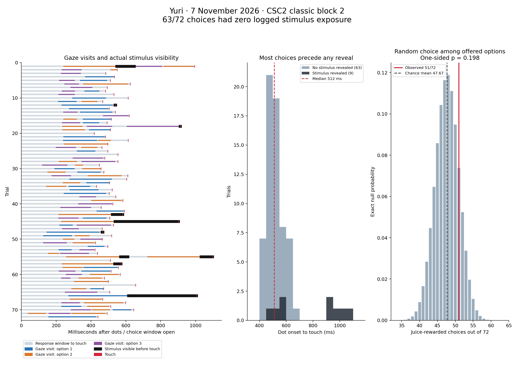
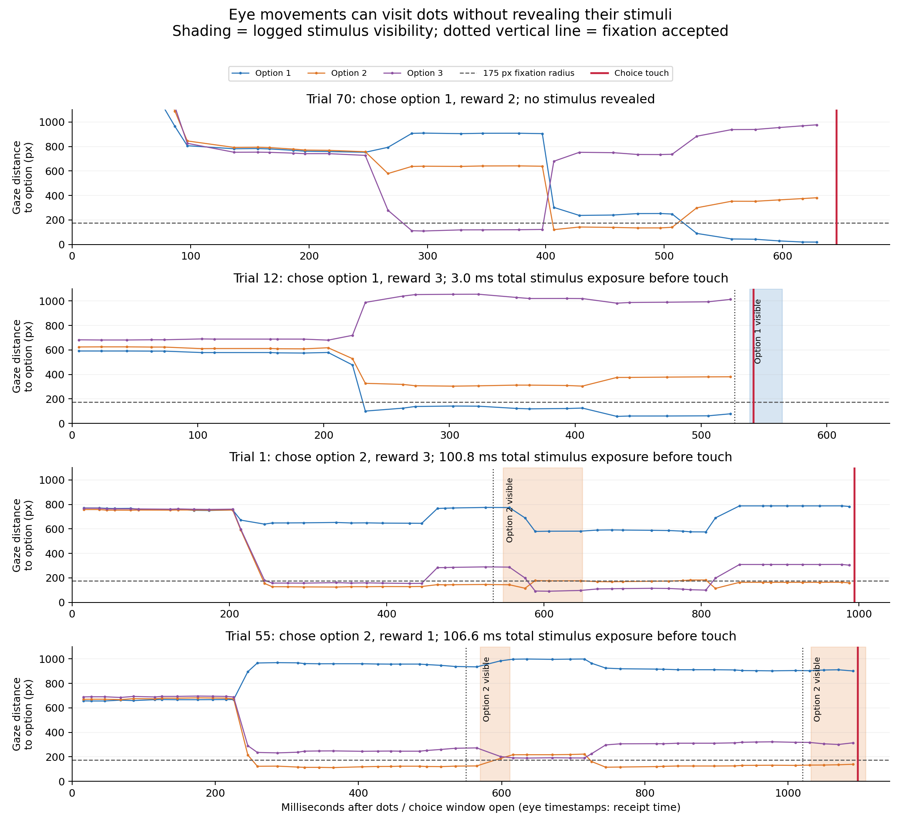

Yuri · 7 November 2026 · experiment exp_Y_20261107_006 · block 2_csc2_foraging_classic
The data support rapid selection of unrevealed dots on most trials, compatible with guessing or a spatial/motor strategy. They do not support rapid visual comparison of multiple color–shape stimuli. There were 72 completed trials; 63 (87.5%) had zero logged stimulus exposure before the choice. Performance was not convincingly above the relevant chance baseline.
The remaining nine trials contained ten reveals. Every reveal was of the subsequently chosen option; trial 55 revealed that same option twice. No trial revealed two different stimuli. Trial 73 was aborted during initiation and is excluded from completed-trial analyses.
The saved block configuration has sequential=false, is_memory=false, duration=0,
wait_for_saccade_on_dot=true, a 175-pixel fixation radius and a 300-ms continuous dwell criterion.
All three dots appear together and the 2-second choice window opens on that same flip, on all 72 trials.
Touch targets for all options are already active, even before any image has appeared.
A stimulus is revealed only after continuous accepted gaze in its window; leaving that window restores its dot. The 100-ms ISI is a minimum waiting period, not a guaranteed image presentation. The 4-second saccade timeout cannot precede the 2-second choice deadline in this configuration. A touch ends the trial even if no fixation was accepted and no stimulus was revealed.
This behavior follows bin/utils.py:
gaze_choice_at_dot_onset and the simultaneous-dot branch (around line 3331),
_match_choice_target (2749), and _run_gaze_contingent_options (3039).
The fixation gate is in bin/dot_fixation.py (61–102).
Using nearest-option ROI visits spanning approximately 60 ms or more, 36/72 trials visited at least two option locations; 34 of those had no stimulus reveal. The median retained visit lasted 119.9 ms. Even restricting to transitions between option windows whose centers were more than 350 pixels apart, 27 trials had a transition. Thus rapid movement between locations is real in the recording, but it usually samples dots.
Trial 70 is especially clear: gaze visited option 3 at 287–397 ms, option 2 at 407–507 ms, then option 1 at 527–629 ms; each visit spanned about 100 ms on the camera clock. The monkey touched option 1 at 645 ms and earned reward level 2. All three locations had remained dots throughout.

Colored segments are retained gaze visits, black segments are stimulus exposure before the touch, and red marks are touches. The reward distribution conditions on each trial’s actual three reward values.
All values below are relative to that trial’s dot-on flip. Visibility ends at an explicit option-off event, or at the gray-screen outcome flip when no separate option-off event was logged. Exposure before touch is capped at the touch timestamp.
| Trial | Chosen option | Reward | Touch after dots (ms) | Visible intervals after dots (ms) | Exposure before touch (ms) |
|---|---|---|---|---|---|
| 1 | 2 | 3 | 994.4 | 547.9–648.6 | 100.8 |
| 12 | 1 | 3 | 541.5 | 538.5–564.6 | 3.0 |
| 18 | 3 | 2 | 912.4 | 911.8–933.9 | 0.6 |
| 43 | 2 | 2 | 581.8 | 522.4–599.0 | 59.5 |
| 45 | 2 | 2 | 901.6 | 537.9–921.3 | 363.7 |
| 48 | 1 | 0 | 468.6 | 463.4–497.2 | 5.2 |
| 55 | 2 | 1 | 1097.2 | 569.9–611.3; 1032.1–1108.4 | 106.6 |
| 57 | 2 | 1 | 572.4 | 536.0–585.8 | 36.4 |
| 66 | 1 | 3 | 1006.2 | 615.9–1025.6 | 390.2 |
Trials 12, 18 and 48 provided only 3.0, 0.6 and 5.2 ms between the image-on callback and recorded touch. Those times do not provide credible evidence that the newly revealed image drove the touch already being executed. Trials 43 and 57 had 59.5 and 36.4 ms before touch. Trials 1, 45, 55 and 66 had at least 100 ms total exposure; some use of stimulus information on these few trials remains possible. Across the nine reveal trials the median total pre-touch exposure was 59.5 ms.
In trial 55, gaze loss caused the image to disappear after 41.5 ms, and a later accepted dwell revealed the same option again for 65.1 ms before touch. This was reacquisition of one option, not comparison of two visible stimuli.

Juice reward is associated with levels 2 and 3, not with one uniquely correct option per trial. A 1/3 baseline therefore does not apply to juice reward. Of the 216 offered options, 143 (66.2%) carried juice. Randomly selecting one of the actual three options on each trial predicts 47.67 rewarded choices; 51 were observed (70.8%). The exact upper-tail probability is p = 0.198. The central 95% of this null distribution spans 41–54 rewarded trials, which includes 51.
| Measure | Observed | Random-choice expectation | Exact one-sided p |
|---|---|---|---|
| Juice rewarded | 51 | 47.67 | 0.1981 |
| Best available reward, ties count | 40 | 37.00 | 0.2564 |
| Total pump pulses | 70 | 64.33 | 0.1588 |
| Sum of reward levels | 134 | 128.00 | 0.2022 |
Choosing a highest-valued option occurred on 40/72 trials (55.6%), versus 37/72 expected (51.4%), counting ties; p = 0.256. Mean chosen reward level was 1.861, versus 1.778 expected. Among the 63 no-reveal trials alone, 45 earned juice versus 42.33 expected; p = 0.245. Thus the main result persists when trials with any potential stimulus information are removed.
The configured frequency map also favors rewarding items: its marginal juice probability is 60.8%; the realized block happened to contain 66.2%.
The primary tests use the realized alternatives, avoiding an assumption that the block exactly matched the sampling distribution.
Reward lookup uses reward_space_TY.csv[shape*36 + color] and reproduces every logged chosen reward (72/72).
The null assumes independent uniform selection among each trial’s options. Failure to reject it does not prove literal random choice: location preferences, a motor routine, or information use on a small subset can coexist with these results. An exploratory RT–reward correlation was positive (Spearman ρ = 0.248, unadjusted p = 0.035), but it was also positive in no-reveal trials (ρ = 0.241, p = 0.057). It does not demonstrate visual discrimination, and was not a prespecified performance test.
The non-memory post-choice feedback routine _preview_choice_feedback in
task/active_foraging.py (around line 768) draws all three images on the experimenter preview,
including options that were never revealed to the subject, and highlights the chosen option. It runs after outcome delivery.
Seeing those images in feedback is therefore not evidence they were available to guide the choice.
The saved block also enabled the synchronization bar (147 flips), although the named source config disables it. Sync-only flips preserve the existing front-buffer scene in bin/sync_display.py; they are not option reveals. Their scheduling latencies should not be interpreted as stimulus exposure durations.
The eye recording contains 11,680 observations; its median camera interval is 19.983 ms (about 50 Hz), despite 100-Hz UART polling. Of the 1,955 observations received between dot onset and touch, 98.9% were valid. There are 244 unrecorded frame sequence numbers across the whole recording (2.05% of the spanned frames). Missing samples, invalid gaze, and gaps over 60 ms split offline visits.
These are ROI visits and relocations consistent with saccades, not a validated physiological saccade detector. No explicit saccade onset/offset events were logged. The visit threshold uses first-to-last camera sample duration with 1-ms tolerance for the 19.983-ms period; there are 38, 36, 30 and 19 trials visiting multiple options at nominal 40-, 60-, 80- and 100-ms thresholds. Assignments use the nearest center within 175 pixels to avoid double-counting overlapping windows; 40 trials had at least two overlapping fixation windows. Online gating evaluates each ROI independently.
CSV task_time_ns records eye-sample reception time. The online gate uses an age-adjusted estimate that is not saved in this CSV.
The camera clock is not synchronized to the task clock. Relative eye-to-display alignment therefore includes acquisition/transport uncertainty,
and these data cannot justify millisecond-precise physiological saccade latencies.
The saved calibration has no multi-point residual error estimate, so window crossings remain calibration-dependent.
Display timings are PsychoPy flip callbacks, not photodiode measurements; touch times are task-recorded input timestamps.
The zero-exposure finding relies on the completeness of event logging and its agreement with the inspected local task implementation.
The run does not identify a saved source commit. The inspected checkout is recorded in metrics.json, along with SHA-256 hashes of inputs and relevant source files.
The local source modifications present at analysis start were left intact; no task code or data on the volume was changed.
The behavior-log “zero transition misses” values are not an independent guarantee of display timing: all 72 trials also report zero scheduled transitions, because this path is driven by gaze and touch. The analysis uses actual option-on/off and outcome flip timestamps instead.
If the intended task requires informed visual choice, the current response rule does not enforce it. For gaze-contingent inspection, the direct correction is to make an option eligible only after a logged reveal and a defined minimum visible interval, and log attempted touches rejected for insufficient exposure. Whether all alternatives must be inspected is a separate task-design decision. Simply extending the choice window or reducing the dwell threshold does not prevent early blind touches.
If “classic” instead means a simultaneously visible array, disabling wait_for_saccade_on_dot selects the ordinary simultaneous-image path.
That changes task semantics; no configuration or task implementation was changed in this analysis.
All 72 trial timings · All 10 reveal intervals · Retained gaze visits · All ROI runs · Metrics and input hashes · Reproducible analysis script
Run: python analyze.py with numpy, pandas, scipy and matplotlib installed. The source data path is set at the top of the script.
All outputs are written beside this script. Tests here are consistency checks of timestamps, all 72 reward lookups, and exact finite-sample null calculations.